압연기능사 (2015-01-25 기출문제)
1과목: 금속재료일반
1. 황(S)이 적은 선철을 용해하여 구상흑연주철을 제조 시주로 첨가하는 원소가 아닌 것은?
- Al
- Ca
- Ce
- Mg
(정답률: 79%)

2. 해드필드(hadfiel)강은 상온에서 오스테나이트 조직을 가지고 있다. Fe 및 C 이외에 주요 성분은?
- Ni
- Mn
- Cr
- Mo
(정답률: 70%)
3. 조밀육방격자의 결정구조로 옳게 나타낸 것은?
- FCC
- BCC
- FOB
- HCP
(정답률: 85%)
4. 전극재료의 선택 조건을 설명한 것 중 틀린 것은?
- 비저항이 작아야 한다.
- Al 과의 밀착성이 우수해야 한다.
- 산화 분위기에서 내식성이 커야 한다.
- 금속 규화물의 용융점이 웨이퍼 처리 온도보다 낮아야 한다.
(정답률: 59%)
5. 그림에서 마텐자이트 변태가 가장 빠른 곳은?
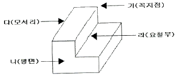
- 가
- 나
- 다
- 라
(정답률: 87%)
6. 7-3 황동에 주석을 1% 첨가한 것으로, 전연성이 좋아 관 또는 판을 만들어 증발기, 열교환기 등에 사용되는 것은?
- 문쯔 메탈
- 네이벌 황동
- 카트리지 브라스
- 애드미럴티 황동
(정답률: 77%)
7. 탄소강의 표준 조직을 검사하기 위해 A3 또는 Acm선보다 30~50℃ 높은 온도로 가열한 후 공기 중에 냉각하는 열처리는?
- 노멀라이징
- 어닐링
- 템퍼링
- 퀜칭
(정답률: 74%)
8. 소성변형이 일어나면 금속이 경화하는 현상을 무엇이라 하는가?
- 탄성경화
- 가공경화
- 취성경화
- 자연경화
(정답률: 85%)
9. 납 황동은 황동에 납을 첨가하여 어떤 성질을 개선한 것인가?
- 강도
- 절삭성
- 내식성
- 전기전도도
(정답률: 73%)
10. 마우러 조직도에 대한 설명으로 옳은 것은?
- 주철에서 C와 P 량에 따른 주철의 조직관계를 표시한 것이다.
- 주철에서 C와 Mn 량에 따른 주철의 조직관계를 표시한 것이다.
- 주철에서 C와 Si 량에 따른 주철의 조직관계를 표시한 것이다.
- 주철에서 C와 S 량에 따른 주철의 조직관계를 표시한 것이다.
(정답률: 81%)
11. 순 구리(Cu)와 철(Fe)의 용융점은 약 몇 ℃ 인가?
- Cu : 660℃, Fe : 890℃
- Cu : 1063℃, Fe : 1⑤0℃
- Cu : 1083℃, Fe : 1539℃
- Cu : 1455℃, Fe : 2200℃
(정답률: 86%)
12. 게이지용 강이 갖추어야 할 성질로 틀린 것은?
- 담금질에 의한 변형이 없어야 한다.
- HRC 60 이상의 경도를 가져야 한다.
- 열팽창 계수가 보통 강보다 커야 한다.
- 시간에 따른 치수 변화가 없어야 한다.
(정답률: 71%)
13. 수면이나 유면 등의 위치를 나타내는 수준면선의 종류는?
- 파선
- 가는 실선
- 굵은 실선
- 1점 쇄선
(정답률: 73%)
14. KS B ISO 4287 한국산업표준에서 정한 ‘거칠기 프로파일에서 산출한 파라미터’ 를 나타내는 기호는?
- R-파라미터
- P-파라미터
- W-파라미터
- Y-파라미터
(정답률: 76%)
15. 척도가 1 : 2 인 도면에서 실제 치수 20mm인 선은 도면 상에 몇 mm 로 긋는가?
- 5 mm
- 10 mm
- 20 mm
- 40 mm
(정답률: 84%)
2과목: 금속제도
16. 실물을 보고 프리핸드로 그린 도면은?
- 계획도
- 제작도
- 주문도
- 스케치도
(정답률: 95%)
17. 상면도라 하며, 물체의 위에서 내려다 본 모양을 나타내는 도면의 명칭은?
- 배면도
- 정면도
- 평면도
- 우측면도
(정답률: 89%)
18. 2N M50×2-6h 이라는 나사의 표시 방법에 대한 설명으로 옳은 것은?
- 왼나사이다.
- 2줄 나사이다.
- 유니파이 보통 나사이다.
- 피치는 1인치당 산의 개수로 표시한다.
(정답률: 83%)
19. 다음 가공방법의 기호와 그 의미가 연결이 틀린 것은?
- C - 주조
- L - 선삭
- G - 연삭
- FF – 소성가공
(정답률: 80%)
20. 그림과 같은 물체를 제3각법으로 그릴 때 물체를 명확하게 나타낼 수 있는 최소 도면 개수는?
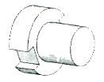
- 1개
- 2개
- 3개
- 4개
(정답률: 78%)
21. 끼워 맟춤에 관한 설명으로 옳은 것은?
- 최대 죔새는 구머의 최대 허용 치수에서 축의 최소 허용 치수를 뺀 치수이다.
- 최대 죔새는 구머의 최소 허용 치수에서 축의 최대 허용 치수를 뺀 치수이다.
- 구멍의 최소 치수가 축의 최대 치수보다 작은 경우 헐거운 끼워 맞춤이 된다.
- 구멍과 축의 끼워 맞춤에서 틈새가 없이 죔새만 있으면 억지 끼워 맞춤이 된다.
(정답률: 69%)
22. 도면에서 중심선을 꺾어서 연결 도시한 투상도는?
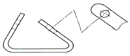
- 보조 투상도
- 국부 투상도
- 부분 투상도
- 회전 투상도
(정답률: 73%)
23. 제도용지에 대한 설명으로 틀린 것은?
- A0 제도용지의 넓이는 약 1m2이다.
- B0 제도용지의 넓이는 약 1.5m2이다.
- A0 제도용지의 크기는 594×841 이다.
- 제도용지의 세로와 가로의 비는 1 : √2 이다.
(정답률: 81%)
24. 다음 도형에서 테이퍼 값을 구하는 식으로 옳은 것은?
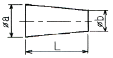
- b / a
- a / b
- a+b / L
- a-b / L
(정답률: 79%)
25. 다음 중 롤 간극(S0)의 계산식으로 옳은 것은? (단, h : 입측판 두께, △h : 압하량, P : 압연하중, K : 밀강성계수, ε : 보정값)
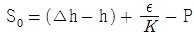
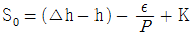
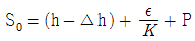
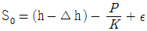
(정답률: 63%)
26. 압하설정과 로울크라운의 부적절로 인해 압연판(Strip)의 가장자리가 가운데보다 많이 늘어나 굴곡진 형태로 나타난 결함은?
- 캠버
- 중파
- 양파
- 루즈
(정답률: 67%)
27. 냉연 스트립(cold strip)의 슬릿(slit) 작업의 목적에 속하지 않는 것은?
- 성분조정
- 검사
- 선별
- 형사 교정
(정답률: 70%)
28. 두께 3.2mm의 소재를 0.7mm로 냉간 압연할 때 압하량은?
- 2.0 mm
- 2.3 mm
- 2.5 mm
- 2.7 mm
(정답률: 81%)
29. 다음 열간압연 소재 중 연속 주조에 의해 직접 주조하거나 편평한 강괴 또는 블룸을 조압연한 것으로, 단면이 장방형이고 모서리는 약간 둥근 형태로 강편이나 강판의 압연소재로 많이 사용되는 것은?
- 슬래브(slab)
- 시트 바(sheet bar)
- 빌릿(billet)
- 후프(hoop)
(정답률: 55%)
30. 압연과정에서 롤 축에 수직으로 발생하는 힘은?
- 인장력
- 탄성력
- 클립력
- 압연력
(정답률: 80%)
3과목: 압연기술
31. 냉간압연 공정에서 산세 공정의 목적이 아닌 것은?
- 냉연 강판의 소재인 열연 강판의 표면에 생성된 스케일을 제거한다.
- 냉간 압연기의 생산성 향상을 위하여 냉연 강판을 연속화하기 위하여 용접을 실시한다.
- 냉연 강판의 소재인 열연 강판의 표면에 생성된 스케일을 제거하지 않고 열연 강판의 두께를 균일하게 한다.
- 필요시 사이드 트리밍(Side Trimming)을 실시하여 고객 주문폭으로 스트립의 폭을 절단하여 준다.
(정답률: 66%)
32. 압연소재가 롤(Roll)에 치입하기 좋게 하기 위한 방법으로 틀린 것은?
- 압하량을 적게 한다.
- 치입각을 작게 한다.
- 롤의 지름을 크게 한다.
- 재료와 롤의 마찰력을 적게 한다.
(정답률: 58%)
33. 다음 중 소성가공 방법이 아닌 것은?
- 단조
- 주조
- 압연
- 프레스가공
(정답률: 80%)
34. 일반적인 냉연 박판의 공정을 가장 바르게 나열한 것은?
- 냉간압연 → 산세 → 아연도금 → 조질압연 → 풀림
- 표면청정 → 산세 → 전달리코일 → 풀림 → 냉간압연
- 산세 → 냉간압연 → 표면청정 → 풀림 → 조질압연
- 냉간압연 → 산세 → 표면청정 → 조질압연 → 풀림
(정답률: 81%)
35. 압연시 소재에 힘을 가하면 압연이 가능한 조건을 접촉각(α)과 마찰계수(μ)의 관계식으로 옳은 것은?
- tanα ≤ μ
- tanα = μ
- tanα ＞ μ
- tanα ≥ μ
(정답률: 77%)
36. 냉연 조질 압연의 목적이 아닌 것은?
- 기계적 성질 개선
- 형상 교정
- 두께 조정
- 항복연신제거
(정답률: 47%)
37. 냉연용 소재가 갖추어야할 품질의 구비 조건과 거리가 먼 것은?
- 코일의 재질이 균일할 것
- 치수와 형상이 정확할 것
- 표면의 Scale은 고착성이 좋을 것
- 표면의 Scale은 박리성이 좋을 것
(정답률: 79%)
38. 냉간압연용 압연유가 구비해야 할 조건이 틀린 것은?
- 유막강도가 클 것
- 윤활성이 좋을 것
- 마찰계수가 클 것
- 탈지성이 좋을 것
(정답률: 71%)
39. 롤 직경 340mm, 회전수 150rpm이고, 압연되는 재료의 출구속도는 3.67m/s일 때 선진율(%)은 약 얼마인가?
- 27
- 37
- 55
- 75
(정답률: 58%)
40. 냉간압연에서 0.25mm 이하의 박판을 제조할 경우 판에서 발생하는 찌그러짐을 방지하는 대책으로 옳은 것은?
- 단면감소율을 크게 한다.
- 롤이 캠버를 갖도록 한다.
- 압연공정 중간에 재가열한다.
- 스텐드 사이에 롤러(Roller) 레벨러를 설치한다.
(정답률: 76%)
41. 그리스(grease)를 급유하는 경우가 아닌 것은?
- 마찰면이 고속운동을 하는 부분
- 고하중을 받는 운동부
- 액체급유가 곤란한 부분
- 밀봉이 요구될 때
(정답률: 74%)
42. 다음 중 조질 압연의 설비가 아닌 것은?
- 페이오프릴(Pay off reel)
- 신장율 측정기
- 스탠드(Stand)
- 전단
(정답률: 58%)
43. 열간 압연 가열로 내의 온도를 측정하는데 사용되는 온도계로서 두 종류의 금속선 양단을 접합하고 양 접합점에 온도차를 부여하여 전위차를 측정하는 온도계는?
- 광고온계
- 열전쌍 온도계
- 베크만 온도계
- 저항 온도계
(정답률: 87%)
44. 냉연 스트립의 풀림 목적이 아닌 것은?
- 압연유를 제거하기 위함이다.
- 기계적 성질을 개선하기 위함이다.
- 가공경화 현상을 얻기 위함이다.
- 가공성을 좋게 하기 위함이다.
(정답률: 52%)
45. 공형 설계의 원칙을 설명한 것 중 틀린 것은?
- 공형 각부의 감면율을 균등하게 한다.
- 직접 압하를 피하고 간접 압하를 이용하도록 설계한다.
- 공형 형상은 되도록 단순화 직선으로 한다.
- 플랜지의 높이를 내고 싶을 때에는 초기 공형에서 예리한 홈을 넣는다.
(정답률: 74%)
4과목: 압연설비
46. 다음 중 공형 설계의 방식이 아닌 것은?
- 플랫(flat) 방식
- 스트라이크(strike) 방식
- 버터플라이(butterfly) 방식
- 다이애거널(diagonal) 방식
(정답률: 68%)
47. 냉간압연에서 변형저항 계산시 변형효율을 옳게 나타낸 것은? (단, Kfm : 변형강도, Kw : 변형저항)
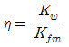
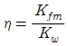
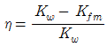
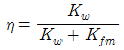
(정답률: 60%)
48. 단접 강관용 재료로 사용되는 반제품으로 띠 모양으로 양단이 용접이 편리하도록 85~88° 로 경사지게 만든 것은?
- 틴바(tin bar)
- 후프(hoop)
- 스켈프(skelp)
- 틴 바 인코일(tin bar in coil)
(정답률: 54%)
49. 천장크레인으로 압연소재를 이동시키려 한다. 안전상 주의해야 할 사항으로 틀린 것은?
- 운전을 하지 않을 때는 전원스위치를 내린다.
- 설비 점검 및 수리시는 안전표식을 부착해야 한다.
- 비상시에는 운전 중에 점검, 정비를 실시할 수 있다.
- 천장크레인은 운전자격자가 운전을 하여야 한다.
(정답률: 90%)
50. 윤활제의 구비조건으로 틀린 것은?
- 제거가 용이 할 것
- 독성이 없어야 할 것
- 화재위험이 없어야 할 것
- 열처리 혹은 용접 후 공정에서 잔존물이 존재할 것
(정답률: 92%)
51. 안전관리 기법이 아닌 것은?
- 무재해 운동
- 위험예지 훈련
- 툴박스 미팅(Tool Box Meeting)
- 설비의 대형화
(정답률: 88%)
52. 압연기 롤의 구비 조건으로 틀린 것은?
- 내마멸성이 클 것
- 강도가 클 것
- 내충격성이 클 것
- 연성이 클 것
(정답률: 70%)
53. 압연 하중이 2000kg, 토크 암(torque arm)의 길이가 8mm일 때 압연 토크는?
- 1.6kg·m
- 16kg·m
- 160kg·m
- 1600kg·m
(정답률: 70%)
54. 하우징이 한 개의 강괴라고도 할 수 있을 만큼 견고하며, 이 속에 다단 롤이 수용되어 규소 강판, 스테인리스 강판 압연기로 많이 사용되며, 압하력은 매우 크며 압연판의 두께 치수가 정확한 압연기는?
- 탠덤 압연기
- 스테컬식 압연기
- 클러스터 압연기
- 센지미어 압연기
(정답률: 70%)
55. 강재 열간압연기의 롤 재질로 적합하지 않은 것은?
- 주철롤
- 칠드롤
- 주강롤
- 알루미늄롤
(정답률: 80%)
56. 다음 중 강괴의 내부결함에 해당되지 않는 것은?
- 편석
- 비금속개재물
- 세로균열
- 백점
(정답률: 59%)
57. 형상교정 설비 중 다수의 소경 롤을 이용하여 반복해서 굽힘으로써 재료의 표피부를 소성 변형시켜 판 전체의 내부응력을 저하 및 세분화시켜 평탄하게 하는 설비는?
- 롤러 레벨러(Roller Leveller)
- 텐션 레벨러(Tension Leveller)
- 시어 레벨러(Shear Leveller)
- 스트레처 레벨러(Stretcher Leveller)
(정답률: 58%)
58. 점도와 응고점이 낮고 고열에 변질되지 않으며 암모니아와 친화력이 약한 조건을 만족시켜야 할 윤활유는?
- 다이나모유
- 냉동기유
- 터빈유
- 선박엔진유
(정답률: 67%)
59. 윤활유의 목적을 설명한 것으로 틀린 것은?
- 접촉부의 마찰 감소 및 냉각 효과
- 방청 및 방진 역할
- 접촉면의 발열 촉진
- 밀봉 및 응력 분산
(정답률: 82%)
60. 루퍼 제어 시스템 중 루퍼 상승 초기에 소재에 부가되는 충격력을 완화시키기 위하여 소재와 루퍼 롤과의 접촉 구간 근방에서 루퍼 속도를 조절하는 기능은?
- 전류 제어 기능
- 소프트 터치 기능
- 루퍼 상승 제어 기능
- 노윕(no-whip) 제어 기능
(정답률: 66%)